道を示す表現
交差点
２つ以上の道が交わるところを交差点という。交差点をつくる道の交わり方によって、十字路、丁字路などが区別される。また、交差点を円形にしたものをロータリー(rotary)（ロータリー交差点、環状交差点ともいう）という。
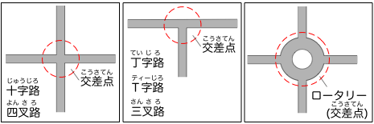
交差点などで、道が曲がっているところを角という。また、道自体が（緩やかに）曲がっているところはカーブ(curve)という。
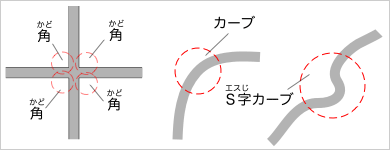
大通り
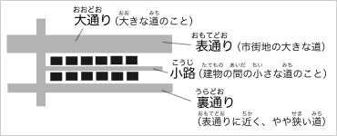
大きな（広い）道は大通り、建物の間の小さな（狭い）道は小路という。
市街地を通る大きな（広い）道で、交通上重要な道を表通りという。一方、表通りの近くにあり、表通りと同じ方向の道だが、表通りより（やや）小さな（狭い）道を裏通りという。
道の移動を示す表現
曲がる・進む
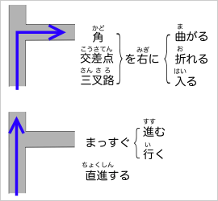
角で移動の方向を変えるときは「〜を曲がる」「〜を折れる」「〜を入る」などという。
- 角を右に曲がる。
- 交差点を右に折れる。
- 三叉路を右に入る。
なお、右に曲がることを「右折（する）」、左に曲がることを「左折（する）」ともいう。
方向を変えずに移動するときには、「〜をまっすぐ進む」「直進する」などという。
- この道をまっすぐ進む。
- この道を直進する。
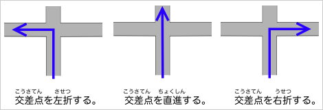
交差点の示し方
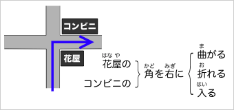
目印になるものがあるときには「○○の角」「○○の交差点」のように言えばよい。「大きな白いビル」のような目立つ建物や「コンビニ」「花屋さん」のような店を目印にするのがよいだろう。
目印がないときや交差点の数が少ないときには、順番を使って交差点を示すことができる。たとえば、「○つ先の交差点」「○つ目の交差点」「○番目の交差点」のように言えばよい。ただし、数字が大きくなるとわかりづらいので、３つ目くらいまでにするのがよいだろう。また、交差点には信号（交通信号、信号機）があるのがふつうなので、「○つ目の信号」のように言ってもよい。
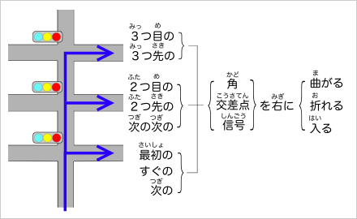
１つ目の交差点は、「最初の交差点」「すぐの交差点」「次の交差点」のように言うこともできる。また、２つ目の交差点は、「次の次の交差点」のように言うこともできる。
突き当たり・斜めに
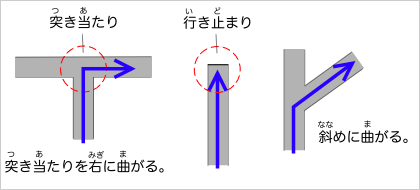
丁字路などで、そのままでは先に進めないところを突き当たりという。突き当たりでは、どちらかに曲がらなければならないが、そのときには「突き当たりを右に曲がる。」のようにいえばよい。
なお、そのままでは先に進めず、左右にも曲がれないところ（戻る以外に行く場所のないところ）は行き止まり、または、行き止まりと呼ぶ。
また、角が直角ではないところでは「斜めに曲がる。」「右に斜めに曲がる。」のように言えばよい。
道なりに
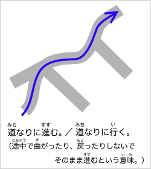
途中で曲がったりせず同じ方向にずっと進むときには、「道なりに進む」「道なりに行く」という。
「この先を道なりに行くとガソリンスタンドがあります。」
「車で道なりに10キロくらい走ると国道に出ます。」
のようにいう。
渡る・抜ける
橋や踏切、横断歩道を通って反対側に行くことを「渡る」という。
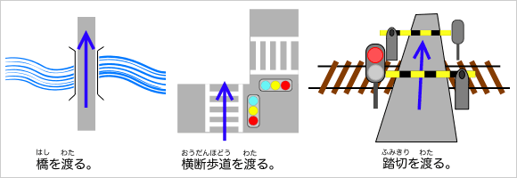
また、トンネル(tunnel)や道の一方の端から他方の端まで行くことを「抜ける」という。
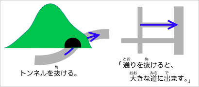
所在を示す表現
位置を示す表現
建物や施設の位置を示すときには、進行方向（進む方向）を基準にして、「右」「左」「角」「つきあたり」などの表現を用いればよい。
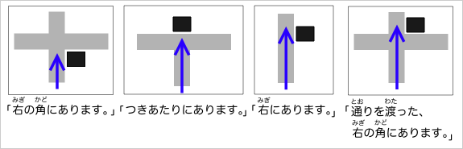
位置関係を示す表現
目印になる建物や施設があるときには、それを基準にした位置関係で表わすとわかりやすい。
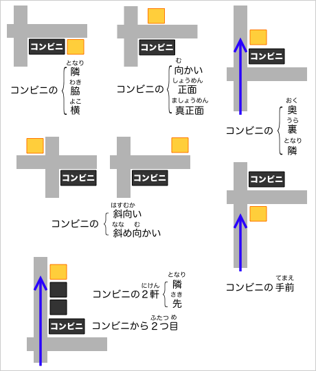
道順を示す表現
道順を示すときには、
（〜して）〜すると、……があります（……が見えます／……に出ます）。
のように言えばよい。
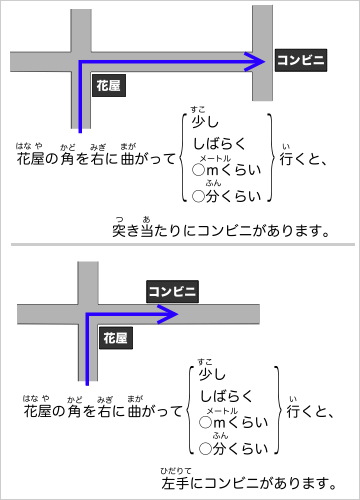